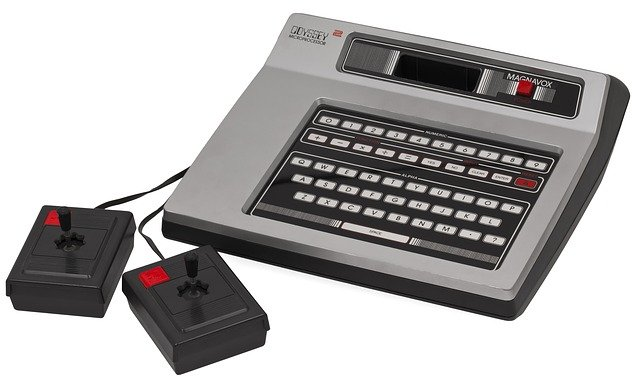
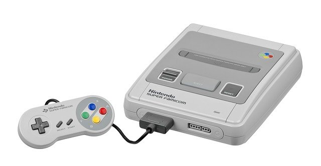

Curiosidades sobre a história da tecnologia que muitos consomem hoje em dia.
Primeiro Jogo
Para muitos, o primeiro jogo eletrônico da história foi desenvolvido em 1962 por Slug Russel, Wayne Witanen e Martin Graetz, colegas do MIT 🔗
(Instituto de Tecnologia de Massachusetts), EUA. Com o fim de criar algo útil para as horas vagas, os estudantes idealizaram um jogo de batalha espacial capaz de rodar nos arcaicos computadores DEC PDP-1: o SpaceWar.
No entanto, alguns historiadores dizem que o tataravô dos jogos fora desenvolvido quatro anos antes, em 1958, pelo físico Willy Higinbotham, mais conhecido por ter sido um dos criadores da bomba atômica. Tratava-se de um joguinho de tênis mostrado em um osciloscópio e processado por um computador analógico, uma espécie de atrativo para os visitantes de seu laboratório.
Brow Box
Em 1968 temos um importante capítulo da história do videogame, por meio da figura do alemão erradicado nos Estados Unidos, Ralph 🔗. Após ter se formado em engenharia eletrônica e trabalhado em diversas empresas de rádio e TV, Baer teve a brilhante ideia de criar um aparelho capaz de rodar jogos eletrônicos por meio da televisão. Tal fato foi de grande importância para o futuro dos games pelo fato de que, até aquele momento, os jogos só rodavam nos computadores e o acesso aos mesmos era restrito a pequenos grupos de estudantes universitários. O alemão desenvolveu e patenteou um aparelho chamado “Brown Box”, capaz de rodar diferentes tipos de jogos, fato que tornou Ralph Baer no “pai” dos videogames.
Magnavox Odissey
O primeiro console comercializado da história foi o Odissey, elaborado pela empresa Magnavox🔗, em 1972, nos Estados Unidos. O aparelho foi vendido no Brasil mais tarde, no final da década de 70. Fabricado pela Philco e Ford, o console ficou conhecido como Telejogo, o qual basicamente consistia em traços que subiam e desciam para rebater um quadrado.

Atari
Um pouco depois do lançamento do Odissey, surge o fenômeno que todos normalmente associam com a história do videogame: o Atari 2600. Projetado por Nolan Bushnell🔗 e lançado em 1978 nos Estados Unidos e em 1983 no Brasil, o console é considerado um símbolo cultural dos anos 80, um verdadeiro fenômeno de vendas.
Mesmo com todo esse sucesso, a Atari passou por sérios problemas financeiros durante a década, ao mesmo tempo em que a japonesa Nintendo🔗 começava a erguer seu império. Seu primeiro sucesso de vendas foi o console Famicom, de 8 bits, o qual foi rebatizado de NES (Nintendo Entertainment System). Sob esta plataforma foram feitos jogos famosíssimos, como Mario e Donkey Kong, por exemplo.
A guerra dos 8 bits
Enquanto a Nintendo crescia e se consolidava como a maior do mundo dos consoles, a SEGA, outra companhia japonesa, também se desenvolvia. Para concorrer com o NES, a empresa lançou o conhecido Master System🔗. Porém, sabendo que não iria ultrapassar a Nintendo na guerra dos 8 bits, se viu obrigada a direcionar seus esforços na criação de um novo console, de 16 bits: o Mega Drive🔗.
A líder Nintendo obviamente entrou na disputa e lançou um dos maiores sucessos de toda a história do videogame: o Super NES. Este é um dos clássicos episódios da batalha dos consoles. Enquanto o aparelho da SEGA tinha mais jogos, o da Nintendo era mais avançado e possuía melhores gráficos. Afinal, quem nunca ouviu falar da disputa entre Mario e Sonic, Nintendo e Sega, respectivamente?

Após esta longa competição, entrou uma nova e forte concorrente no mundo dos games: a Sony, abrindo caminho para o surgimento de uma nova geração de consoles. Naquele momento, a SEGA lançou sem muito sucesso seu 32 bits, Saturn🔗. A Nintendo surpreendeu todo o mundo anunciando o N64, com gráficos de 64 bits. Outro importantíssimo fato foi o lançamento do Playstation🔗, da Sony, que por possuir uma grande biblioteca de jogos, se tornou líder de vendas e bateu a incrível marca de 100 milhões de consoles vendidos.
Atualmente (2004)
Por ser recente, a penúltima geração dos videogames é conhecida até mesmo pelas crianças: o bem-sucedido Playstation 2, da Sony, lançado no ano 2000, o qual continuou a história de sucesso do Playstation e passou a ter mídias em formato DVD, o GameCube🔗, da Nintendo, sucessor natural do N64🔗, e a novidade Xbox🔗, da gigante dos softwares Microsoft🔗.
A mais recente geração de consoles se resume a três lançamentos das mesmas fabricantes da geração passada: Playstation 4, da Sony, Wii U🔗, da Nintendo, e Xbox One, da Microsoft. De fato, o mercado dos games só cresce a cada dia. Uma prova disso é fato de que, de 1999 a 2004, o mesmo faturou 21 bilhões de dólares, mais que duas vezes o faturamento de todos os filmes de Hollywood no mesmo período.